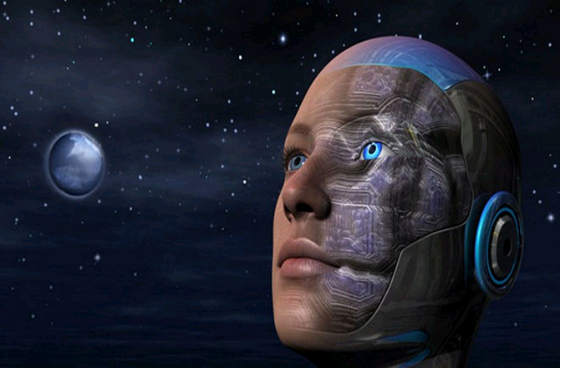

作者 |
人工智能时代，人类还有哪些工作不能被替代？
未来人们的收入高低，将很大程度上取决于能否和机器人默契配合。
随着人工智能的不断发展，它对就业的影响表现的越来越明显。人工智能已是未来发展趋势，不可阻挡，并且会扫荡到各个领域，或迟或早，成为你我的竞争对手。俗话说，男怕入错行，其实男女都怕！年轻人，还有正在读书的孩子，未来如何生存？哪些行业、工作、领域，职能机器人很难替代呢？中国银行协会首席经济学家巴曙松认为，技术进步会不断消灭旧的就业岗位，也会创造新的就业岗位。未来人们的收入高低，将很大程度上取决于能否和机器人默契配合。
从就业的角度看，人工智能的影响表现得越来越明显。实际上，即使是在2008年金融危机之前，一些海内外知名高校人工智能专业的毕业生，找工作都不太容易。但是，近年来，这些知名高校人工智能方面的研究生往往还没有毕业就已经被一些海外大型企业一抢而空。
可以预计，随着人工智能的不断发展，人工智能对于就业的影响会表现得越来越明显。当人工智能不断击败最优秀的人类围棋选手时，我们就可以预计，未来的年轻人可能就不会像以前那样花那么多的时间去钻研围棋，而会去学习更加适应人工智能时代的新知识了。
人工智能（Artificial Intelligence），英文缩写为AI，它是研究、开发用于模拟、延伸和扩展人的智能的理论、方法、技术及应用系统的一门新的技术科学。人工智能是计算机科学的一个分支，它企图了解智能的实质，并生产出一种新的能以人类智能相似的方式作出反应的智能机器。
在移动互联网技术发展与应用不断成熟基础上，互联网+人工智能已在大力发展中，成为未来科技革命和产业变革的新引擎，也将带动和促进传统产业的转型升级。将来人与物、物与物之间的对话、指令、自动化控制，大部分将由人工智能程序控制，甚至实现“万物互联”。如今的人工智能应用范围甚广，机器翻译、智能控制、专家系统、机器人学、语言和图像理解、自动程序设计、航天应用等等。
人工智能的时代正在来临。人工智能不是说要和人类具备一样的智能，它们的作用是帮助人类；未来，人工智能可以作为一个商品来售卖，把人工智能运用在某一个领域的工作；对人工智能来说，使用的人越多，它就越聪明。随着它越来越聪明，使用它的人就会越来越多，这是一个循环；人工智能给人类创造新的工作机会。未来人们的收入高低，将很大程度上取决于能否和机器人默契配合。
每一轮科技革命都会带来新一轮工作革命，人工智能将大量淘汰传统劳动力，很显然会有不少行业，会因为人工智能的兴起而消亡。未来机器人将会替代人工服务和操作，这可能将导致大量的服务工作、流程工作和中层管理环节 “消失”。只有新型劳动力才能适应智能时代。
同时，虽然机械性的、可重复的脑力或体力劳动，将被人工智能或机器人取代。但是，会有更多新的、深度的、创意性的人才需求出现。人工智能相关“新行业”将带来的“新岗位”，人工智能时代的到来，必定会产生一些“没听说过”的新岗位，比如已经被行业认可的“自然语言处理”，以及“语音识别工程师”等等，比如人工智能或机器人产品经理。而且其他行业“旧岗位”也需“人工智能化”，如大多数保安、翻译会被人工智能取代，但剩下的少数人，可能收入会更高，比如能操控安保机器人又有丰富安保经验的安保负责人，比如垂直于某个细分领域的翻译人才。从历史上看，技术进步会不断消灭旧的就业岗位，也会创造新的就业岗位。例如，轿车的普及消灭了黄包车夫的就业岗位，却创造了出租车司机的就业岗位。
人工智能时代的到来给我们带来的既有机遇也有挑战。首先，对新技术的发展与影响要有充分的敏感性。其次，只有不断学习，提高自己的认知能力，才能对当下和未来的事物有比较清晰的认知，并适时做出选择。其实，不断地学习是在未来给自己留有更多的选择余地。要有意识提高自己的创新意识和能力，按照智能社会的分工，创新劳动将占有主导地位。提升自己的适应能力和协作能力，人工智能时代的到来，将会给我们的社会分工、文化、习惯等各方面带来巨大的改变。再则，要积极拥抱人工智能，充分认知自身职业特点或职业规划与人工智能的关系，积极运用人工智能提升岗位价值，如成为机器人、人工智能的调配管理者，成为人工智能的个性化、定制化创意设计师，成为运用思维、策划方案引领人工智能去落实业务得到成果的高端营销策划师等等。